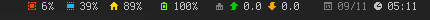
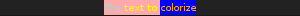
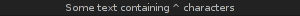
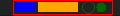
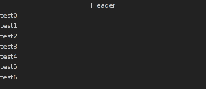

lang fr|gb

howto use dzen2
dzen2 is a messages, notifications and menus software for X11. it was designed to be lightweight, fast and to support different scripts languages.
dzen2 supports XFT fonts (in options), colors and formatting, icons, graphics and actions of the keyboard/mouse. dzen2 is available in most GNU/Linux distributions. the version integrated in livarp comes from svn repositories: dzen2-0.9.5.
livarp uses dzen2 for notifications but it can be used to display infos from conky. your ~/bin directory includes the dzenbar.sh script that reads ~/.conky/conkyrc_dzen output to collect informations, then display it in a clickable statusbar.
configuration
options
dzen accepts different options, the format options will be discribed later:
options.....argments.................description
-fg.........#RRGGBB,color............text color
-bg.........#RRGGBB,color............background color
-fn.........police xft ou classic....font to use
-ta.........l(eft),c(enter),r(ight)..title text alignment
-sa..................................slave text alignment
-tw.........x(pixels)................title window width
-w...................................window width
-h...................................lines height, by default: font height +2px
-x...................................horizontal position from top_left_corner of the screen
-y...................................vertical position from top of the screen
-l..........n(number)................number of displayed lines in the slave window
-m...................................menu mode (see menu section of this help)
-e...................................events & actions (see events & actions section of this help)
-p..........s(econdes)...............last value persists 's' secondes (option)
-u...................................update title & slave window simultaneous
-xs.........n(number)................number of the xinerama screen to use
-v...................................dzen2 version
display
dzen display title and slave window this way:


the first lines passed to dzen becomes the title window while the other are displayed in the slave window.
stop
dzen2 suspend display:
- when button3 is pressed (right cick by default)
- when 'ESC' is pressed under some conditions
- when the file passed to dzen ends (EOF), or if the '-p' option is used:
- '-p' without arguments fixes the window
- '-p n' fixes the window for 'n' seconds
utilisations
note that above descriptions are for default configuration. you can modify it with the '-e' option (see events & actions section).
option -l: slave window
-l option is used to display several lines when the pointer comes to the title window. number of lines to be displayed is passed as argument (-l 5 display 5 lines).
when the cursor leave the slave window, this window auto-hide, you can fix the window wit ha middle-click.
scroll up/down with the mouse scrolls the window slave text if it's too small for the text.
example: a good way to understand how slave window works (right click to exit dzen2):
cat ~/.bashrc | dzen2 -l 30 -p
option -e: events & actions
dzen can configure some keybind/mousebind to interract with its display.
option -e syntax: -e 'event1=action1:option1:…option'n',…,action'm';…'
each event can be associated to severals actions that can have severals options.(limited to 64 for each but you can modify it in the sources, action.h file).
- example
-e 'button1=exec:xterm:firefox;entertitle=uncollapse;button3=exit'
- explanation
- button1=exec:xterm:firefox; : press button1 launches xtem and firefox. here, xterm and firefox are the options of the action to event button1.
- entertitle=uncollapse; : slave window is displayed when pointer comes on title window
- button3=exit : dzen2 exits with button3 on title window.
events list for dzen2
- onstart : Perform actions right after startup.
- onexit : Perform actions just before exiting.
- onnewinput : Perform actions if there is new input for the slave window.
- button1 : Mouse button1 released
- button2 : Mouse button2 released
- button3 : Mouse button3 released
- button4 : Mouse button4 released
- button5 : Mouse button5 released
- button6 : Mouse button6 released
- button7 : Mouse button7 released
- entertitle : Mouse enters the title window
- leavetitle : Mouse leaves the title window
- enterslave : Mouse enters the slave window
- leaveslave : Mouse leaves the slave window
- sigusr1 : SIGUSR1 received
- sigusr2 : SIGUSR2 received
- key_KEYNAME : Keyboard events(*)
keyboard events:
Every key can be bound to an action (see below). The format is:
key_KEYNAME where KEYNAME is the name of the key as defined in keysymdef.h (usually: /usr/include/X11/keysymdef.h).
The part after 'XK_' in keysymdef.h must be used for KEYNAME.
supported actions:
- exec:command1:..:n : execute all given options
- menuexec : executes selected menu entry
- exit:retval : exit dzen and return 'retval'
- print:str1:…:n : write all given options to STDOUT
- menuprint : write selected menu entry to STDOUT
- collapse : collapse (roll-up) slave window
- uncollapse : uncollapse (roll-down) slave window
- togglecollapse : toggle collapsed state
- stick : stick slave window
- unstick : unstick slave window
- togglestick : toggle sticky state
- hide : hide title window
- unhide : unhide title window
- togglehide : toggle hide state
- raise : raise window to view (above all others)
- lower : lower window (behind all others)
- scrollhome : show head of input
- scrollend : show tail of input
- scrollup:n : scroll slave window n lines up (default n=1)
- scrolldown:n : scroll slave window n lines down (default n=1)
- grabkeys : enable keyboard support
- ungrabkeys : disable keyboard support
- grabmouse : enable mouse support (only needed with specific windowmanagers, such as fluxbox)
- ungrabmouse : release mouse (only needed with specific windowmanagers, such as fluxbox)
if no events/actions are specified dzen defaults to:
- title only mode
-e 'button3=exit:13'
- multiple lines and vertical menu mode
-e 'entertitle=uncollapse,grabkeys;
enterslave=grabkeys;leaveslave=collapse,ungrabkeys;
button1=menuexec;button2=togglestick;button3=exit:13;
button4=scrollup;button5=scrolldown;
key_Escape=ungrabkeys,exit'
- horizontal menu mode
-e 'enterslave=grabkeys;leaveslave=ungrabkeys;
button4=scrollup;button5=scrolldown;
key_Left=scrollup;key_Right=scrolldown;
button1=menuexec;button3=exit:13
key_Escape=ungrabkeys,exit'
option -m: menu
Dzen provides two menu modes, vertical and horizontal menus. You can access these modes by adding 'v'(ertical) or 'h'(horizontal) to the '-m' option. If nothing is specified dzen defaults to vertical menus.
- vertical menu, both invocations are equivalent:
dzen2 -p -l 4 -m < file dzen2 -p -l 4 -m v < file
- horizontal menu:
dzen2 -p -l 4 -m h < file
all actions beginning with "menu" work on the selected menu entry.
menu mode only makes sense if '-l
horizontal menus have no title window, so all actions affecting the title window will be silently discarded in this mode..
option -u: simultaneous updates
This option provides facilities to update the title and slave window at the same time.
the way it works is best described by an example: we want to display an updating clock in the title and some log output in the slave window:
while true; do
date # output goes to the title window
dmesg | tail -n 10 # output goes to the slave window
sleep 1
done | dzen2 -l 10 -u
For this to work correctly it is essential to provide exactly the number of lines to the slave window as defined by the parameter to '-l'.
in-text formating & control language
this feature allows to dynamically (at runtime) format the text dzen displays and control its behaviour.
currently the following commands are supported:
- colors
- ^fg(color): set foreground color
- ^fg(): without arguments, sets default fg color
- ^bg(color): set background color
- ^bg(): without arguments, sets default bg color
- graphics
- ^i(path): draw icon specified by path. supported formats: XBM and optionally XPM
- ^r(WIDTHxHEIGHT): draw a rectangle with the dimensions WIDTHxHEIGHT
- ^ro(WIDTHxHEIGHT): rectangle outline
- ^c(RADIUS): draw a circle with size RADIUS pixels
- ^co(RADIUS): circle outline
- positioning
- ^p(+/-X): move X pixels to the right or left of the current position (on the X axis)
- ^p(+/-X;+/-Y): move X pixels to the right or left and Y pixels up or down of the current position (on the X and Y axis).
- ^pa(args): takes the same parameters as described above but positions at the absolute X and Y coordinates.
- interaction
- ^ca(BTN, CMD) … ^ca(): Used to define 'clickable areas' anywhere inside the title window
- BTN denotes the mouse button (1=left, 2=right, 3=middle, etc.)
- CMD denotes the command that should be spawned when the specific area has been clicked with the defined button.
- … : denotes any text or formating commands dzen accepts
- ^ca(): without arguments denotes the end of this clickable area
- example: this command displays "[mpd|vol]"
- the block […] play/stop on left/right click
- mpd block scroll up/down the playlist while you scroll up/down with the mouse
- vol block increase/decrease the volume while you scroll up/down with the mouse
- actions as commands
- ^togglecollapse()
- ^collapse()
- ^uncollapse()
- ^togglestick()
- ^stick()
- ^unstick()
- ^togglehide()
- ^hide()
- ^unhide()
- ^raise()
- ^lower()
- ^scrollhome()
- ^scrollend()
- ^exit()
- other commands
- ^tw(): draw to title window. this command has some annoyances, as only the input after the command will be drawn to the title window, so it is best used only once and as first command per line.
- ^cs(): clear slave window. this command must be the first and only command per line
- ^ib(VALUE): ignore background setting, VALUE can be either 1 to ignore or 0 to not ignore the bg color set with ^bg(color). This command is useful in combination with ^p() and ^pa() in order to position the input inside other already drawn input.
^ca(1,mpc toggle)^ca(3,mpc stop)[^ca(4,mpc prev)^ca(5,mpc next)mpd^ca()^ca()|^ca(4,mpc volume +3)^ca(5,mpc volume -3)vol^ca()^ca()]^ca()^ca()
see “events & actions” section for details about commands.
These commands can appear anywhere and in any combination in dzen's input.
The color can be specified either as symbolic name (e.g. red,darkgreen, etc.) or as #rrggbb hex-value (e.g. #ffffaa).
some examples
- colored text
echo "^fg(red)I'm red text ^p(+20)^fg(blue)I am blue" | dzen2 -w 300 -p

- colored text & background
echo "^bg(#ffaaaa)The ^fg(yellow)text to ^bg(blue)^fg(orange)colorize" | dzen2 -w 300 -p
- display "^"
echo "^fg(grey70)Some text containing ^^ characters" | dzen2 -w 300 -p
- xbm images
echo "^i(dzicons/mail.xbm) I am an envelope ^fg(yellow)and ^i(dzicons/bat_full_02.xbm) I'm a baterry." | dzen2 -w 300 -p

- rectangles
echo "6x4 rectangle ^r(6x4) ^fg(red)12x8 ^r(12x8) ^fg(yellow)and finally 100x15 ^r(100x15)" | dzen2 -w 300 -p

- rectangles & positions
echo "^ib(1)^fg(red)^ro(100x15)^p(-98)^fg(blue)^r(20x10)^fg(orange)^p(3)^r(40x10)^p(4)^fg(darkgreen)^co(12)^p(2)^c(10)" | dzen2 -x 20 -y 20 -w 120 -p
- display message and timeout after 10 seconds
(echo "This is a message"; sleep 10) | dzen2 -bg darkred -fg grey80

- Displays "Header" in the title window and the output of cal in the 8 lines high slave window
(echo Header; cal; sleep 20) | dzen2 -w 300 -l 8

- Display updating messages
(echo Header; while true; do echo test$((i++)); sleep 1; done) | dzen2 -w 300 -l 12
- simple menu:
dzen2 -w 200 -l 4 -p -m < dzenmenu.txt
where dzenmenu.txt is (each entry after “Menu” is a command to execute)
Menu
urxvtc
rox-filer
firefox
geany
- horizontal menu without menu-file
echo -e "xterm\nxclock\nxeyes\nxfontsel" | dzen2 -w 300 -l 4 -m h -p

have fun with dzen2 :)